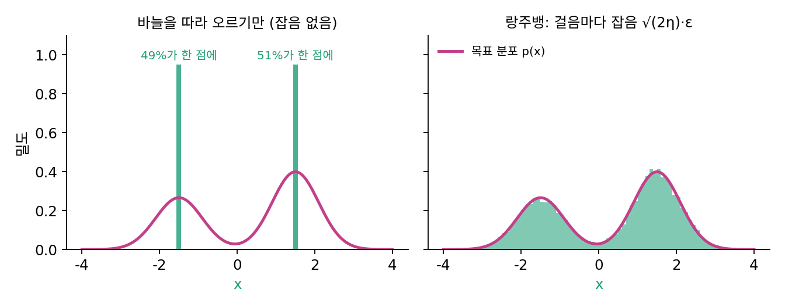

7장 — 랑주뱅과 역방향 미분방정식: 샘플을 뽑는 길
이 장의 물음
그림 생성 도구에서 같은 문장을 넣고 「생성」을 두 번 누르면 다른 그림이 나온다. 시드라는 숫자를 고정해 두면 몇 번을 눌러도 같은 그림이 나온다. 그림을 만드는 과정 어딘가에 무작위로 뽑는 수가 들어 있고, 그 수가 어떤 그림이 나올지를 정한다는 뜻이다. 그런데 그 무작위는 과정의 어디에, 얼마나 들어가 있을까?
잡음 섞인 그림을 받아 섞인 잡음을 맞히는 신경망은 지어서 배울 수 있게 되었고, 그 출력은 식 한 줄로 그 잡음 수준의 바늘, 곧 스코어가 된다. 남은 일은 그 바늘을 들고 순수한 잡음에서 그림까지 실제로 걸어가는 것이다. 걷는 법은 이미 두 가지를 보았다. 퍼지는 흐름을 거꾸로 따라가는 길은 출발점만 뽑고 나면 잡음 없이 매끄럽게 걸었다. 반면 DDPM이 한 걸음씩 되돌릴 때는 걸음마다 분산 βt인 가우시안에서 새로 뽑으니, 걸음마다 잡음을 다시 넣는다. 이 장은 다음 물음에 차례로 답한다.
- 바늘 하나만 손에 있다면, 그 바늘을 따라 걸어서 분포의 높낮이대로 표본을 뽑을 수 있을까?
- 봉우리 둘이 멀리 떨어져 있으면, 걷는 사람들이 두 봉우리에 알맞은 비율로 나뉠까?
- 잡음을 걷어 가며 거꾸로 걷는 길에 잡음을 다시 넣어도 같은 곳에 닿을까? 넣는다면 얼마나 넣어야 할까?
- 잡음을 넣는 길과 넣지 않는 길이 같은 곳에 닿는다면, 둘은 무엇이 다를까?
랑주뱅 샘플링: 바늘을 따라 비틀거리며 걷기
레이더가 손에 있으면 가장 먼저 떠오르는 걸음은 바늘을 따라 오르는 것이다. 신경망을 배울 때 손실의 기울기를 따라 내려가던 것과 같은 일이다. 그런데 생성 모델에게 바라는 것은 가장 높은 꼭대기 하나가 아니다. 같은 버튼을 다시 누르면 다른 고양이가 나와야 하고, 여러 번 누르면 세상에 있는 고양이들의 비율대로 여러 모습이 나와야 한다. 바늘만 따라 오르면 어떻게 될까? 그리고 무엇을 더해야 지형의 높낮이대로 흩어질까?
오르기만 하면 꼭대기에 선다
봉우리가 둘인 1차원 분포로 시험해 보자. 봉우리는 −1.5(비중 0.4)와 +1.5(비중 0.6)에 있고 폭(표준편차)은 0.6이다. 봉우리 사이 골짜기가 깊지 않아 걷는 사람이 이쪽저쪽을 오갈 수 있는 가장 단순한 경우부터 본다. 이 분포의 스코어는 식으로 바로 계산된다. −4와 4 사이에 고르게 뿌린 점 2만 개를 걸음 크기 0.01로 3,000걸음 동안 바늘 쪽으로만 옮기면, 모든 점이 −1.5와 +1.5 두 자리에 정확히 멈춘다. 오른쪽에 선 점은 51%로, 처음에 0보다 오른쪽에 뿌려진 비율 그대로다. 봉우리 모양도 비중도 사라지고 꼭대기 두 점만 남았다.
이제 걸음마다 무작위 걸음을 하나씩 섞는다.
η(에타)는 걸음 크기에 흔히 쓰는 글자로, 신경망을 배울 때 학습률이 앉는 자리다. 같은 점 2만 개를 같은 걸음 크기로 3,000걸음 걸으면, 오른쪽 봉우리에 0.598이 모이고(참 비중 0.6) 오른쪽 봉우리 안의 표준편차는 0.593이다(참값 0.6). 점들의 평균도 0.306으로 참값 0.3에 맞는다. 꼭대기 두 점이 아니라 지형의 높낮이대로 흩어졌다.

이렇게 고정된 분포의 바늘을 따라 걸으면서 걸음마다 알맞은 크기의 잡음을 섞어 그 분포의 표본을 얻는 방법을 랑주뱅 샘플링 (바늘을 따라 비틀거리며 걸어 표본 뽑기 / Langevin dynamics, Langevin MCMC)이라 한다. 이 장에서 앞으로 「랑주뱅 걸음」은 위 식의 한 걸음을 가리킨다. 이름은 물리학자 폴 랑주뱅(Paul Langevin)이 1908년 물속 작은 알갱이의 떨림을 적은 식에서 왔다. 힘에 끌려가는 움직임에 무작위 떨림을 더한 그 식이, 힘 자리에 스코어를 넣으면 위 걸음이 된다.
왜 하필 √(2η)인가
잡음은 왜 √(2η)여야 할까? 잡음을 섞는 일이 무엇을 하는지는 이미 안다. 걸음마다 분산 2η인 잡음을 더하면 점들의 분포는 열 방정식을 따라 퍼지고, 확률은 속도 −s, 곧 바늘의 반대쪽으로 흐른다(퍼지는 빠르기 1로 시간 η만큼 퍼진 것과 같다). 그런데 바늘 쪽으로 옮기는 몫 ηs는 같은 시간 동안 점들을 속도 +s로 옮긴다. 분포가 이미 p라면 두 흐름이 자리마다 정확히 상쇄되어, 한 걸음을 걸은 뒤에도 분포는 p 그대로다. 걸음을 거듭해도 바뀌지 않는 이 분포를 그 걷기의 정상 분포(시간이 지나도 바뀌지 않는 분포, 정규분포와 다른 말)라 부르는데, 위 걸음의 정상 분포가 바로 p다. 잡음이 너무 작으면 바늘 쪽 흐름이 이겨 봉우리로 몰리고, 너무 크면 퍼지는 흐름이 이겨 넓게 흩어진다. 계수가 얼마나 어긋나면 어디로 가는지는 아래 문제에서 직접 재 보자.
다만 이 상쇄는 걸음이 아주 작을 때의 이야기다. 걸음 크기가 유한하면 점들은 p보다 조금 넓게 흩어지는데, 그 어긋남을 걸음 수와 맞바꾸는 일은 샘플을 실제로 뽑는 걸음법에서 따로 다룬다.
ML에서: 신경망 매개변수의 표본, 그리고 그림의 표본
웰링(Max Welling)과 테(Yee Whye Teh)는 2011년, 신경망을 배우는 경사하강의 한 걸음에 이 잡음을 더하면 매개변수 θ(세타)의 한 값이 아니라 사후분포의 표본들이 나온다는 것을 보였다. 확률적 경사 랑주뱅 동역학(SGLD)이다. 손실 𝓛(θ)가 −log(사후분포)라면 s = −∇𝓛이니, 위 걸음은 「손실의 내리막으로 η만큼 + 잡음 √(2η)」이다. 디퓨전 쪽에서는 걷는 점이 매개변수가 아니라 그림이고, 바늘은 손실의 기울기가 아니라 신경망 sθ가 내놓는 그림 크기의 스코어다. 스코어를 배운 뒤 그림을 뽑는 가장 단순한 길이 이 걸음이다.
문제 1. 목표 체중 근처의 흔들림
민준이는 매일 아침 몸무게를 재고, 목표 체중과의 차이를 그날 10%씩 줄이도록 식단을 조절한다. 그런데 먹는 양과 물 마신 양 때문에 몸무게는 하루에 표준편차 0.3 kg씩 제멋대로 흔들린다(날마다 서로 상관없다). (가) 오래 지나면 몸무게는 목표 둘레에서 표준편차 얼마로 흔들리는가? (나) 하루 흔들림이 두 배(0.6 kg)가 되면? (다) 흔들림은 0.3 kg 그대로 두고 매일 줄이는 비율을 20%로 올리면?

매일 목표 쪽으로 당기니까 결국 목표에 붙지 않을까요? 남는 건 하루 흔들림 0.3 kg 정도겠죠.

오늘 차이가 d라면 내일 차이는 얼마예요?
0.9d에 새 흔들림이 더해져요. 분산으로 쓰면… 오늘 분산 v가 내일 0.81v + 0.09가 돼요.

오래 지나서 분산이 더는 안 바뀌면 v = 0.81v + 0.09니까 v = 0.09/0.19 = 0.474, 표준편차 0.688 kg이야. 하루 흔들림 0.3보다 두 배 넘게 커.

아, 당기는 게 매일 10%뿐이라 그사이에 흔들림이 쌓이는구나. 모의로 2만 명을 400일 돌려도 0.69가 나와요.
(나)와 (다)는요?
(나)는 분산이 네 배라 표준편차가 1.376 kg으로 두 배예요. (다)는 v = 0.09/(1 − 0.64) = 0.25, 표준편차 0.5 kg이고요. 결국 퍼짐을 정하는 건 당기는 세기와 흔드는 세기의 비율이네.

그래요. 한쪽만 보고는 끝에 어디쯤 머무는지 알 수 없어요. 둘의 비가 끝 분포를 정해요.
조교님이 매주 「지난주 실수의 절반만 고쳐 와도 된다」고 하시는데, 새 실수가 계속 생기니까 실수 개수가 0이 아니라 어느 수준에서 머무는 거랑 같네요.
문제 2. 비틀거림의 크기
1차원 표준정규분포 p = N(0, 1) 위에서 랑주뱅 걸음 x ← x + ηs(x) + √(2η)ε를 아주 작은 걸음 크기(η = 0.001)로 오래 돌린다. 이 분포의 스코어는 s(x) = −x다. (가) 잡음 앞의 √2를 1이나 2로 바꾸면, 오래 돌린 뒤 점들의 분산은 얼마인가? (나) 잡음은 √(2η)로 두고 바늘 몫을 −x 대신 −x/4로 바꾸면, 점들은 어느 분포에 머무는가? 그 분포의 스코어는 무엇인가?

잡음이 있긴 하니까 계수가 1이든 2든 결국 N(0, 1)로 가지 않을까? 잡음 크기는 얼마나 빨리 가느냐만 바꿀 것 같아.

돌려 봤는데 아니야. √2일 때 분산 1.001인데, 1이면 0.509, 2면 2.002야.

빠르기만 바뀐 게 아니네. 머무는 분포 자체가 바뀌었어.
체중 문제에서 끝의 퍼짐을 정한 게 무엇이었죠?
당기는 세기와 흔드는 세기의 비요. 여기서 한 걸음에 당기는 몫이 ηx이고 잡음 분산이 c²η이면, v = (1 − η)²v + c²η에서 η가 작을 때 v ≈ c²/2예요. c = 1이면 ½, c = 2면 2, c = √2일 때만 1이에요.

(나)도 같은 식으로 해 볼까요?

당기는 몫이 ηx/4면 v ≈ 2/(2 × ¼) = 4라서 N(0, 4)예요. 돌린 값도 3.979고요. 그 분포의 스코어는 −x/4… 바늘 몫에 넣은 것과 똑같아요.

아, 그러니까 잡음을 √(2η)로 맞춰 두면, 바늘 자리에 어떤 분포의 스코어를 넣든 그 분포에 머무는 거야. 넣은 바늘이 곧 목표가 되는 거지.
미분방정식 수업에서 평형점은 들어오는 양과 나가는 양이 같은 곳이었어요. 여기서는 점 하나가 아니라 분포 전체가 그 평형이네요.
문제 3. 잡음을 √η로 넣은 SGLD
매개변수 θ 하나짜리 모델의 사후분포가 N(1, 0.5²)이라, 손실이 𝓛(θ) = (θ − 1)²/(2 × 0.25)이다. 학습률 η = 0.01로 SGLD 한 걸음 θ ← θ − η∇𝓛(θ) + √(2η)ε를 돌려 표본 2만 개를 얻고, 표본의 가운데 95%가 놓인 구간을 「θ가 있을 법한 구간」으로 보고한다. 그런데 동료의 코드에는 잡음이
sqrt(lr), 곧 √η로 들어가 있었다. (가) 두 코드의 구간은 각각 어떻게 나오는가? 참 구간은 [0.02, 1.98]이다. (나) 어느 쪽이 「모델이 자신 있다」고 잘못 말하는가?
잡음은 탐색하라고 넣는 거니까 크기는 대충 맞으면 될 것 같아요. 평균은 둘 다 1 근처일 거고요.
돌려서 구간을 견줘 봐요.
√(2η)는 표준편차 0.505, 구간 [0.016, 1.990]이에요. √η는 평균은 1.000으로 같은데 표준편차가 0.360, 구간이 [0.293, 1.715]예요. 훨씬 좁아요.
몸무게 문제랑 같네. 당기는 세기는 그대로인데 흔드는 분산을 반으로 줄였으니, 끝 분포의 분산도 반이 돼서 표준편차가 1/√2배야. 0.5 × 0.707 = 0.354.
0.505가 0.5보다 조금 큰 건요?
걸음 크기가 유한해서 생기는 어긋남이에요. 걸음 크기를 줄이면 0.5로 다가가겠죠.

그러면 (나)는 √η 쪽이에요. 참으로는 0.02에서 1.98까지 있을 수 있는데 0.29에서 1.72라고 말하니까요. 잡음 크기 하나가 틀렸을 뿐인데 모델이 실제보다 자신만만해졌어요.
그래요. 랑주뱅에서 잡음의 크기는 탐색용 양념이 아니라 어느 분포에서 뽑는지를 정하는 값이에요.